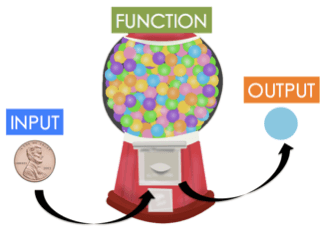

Capítulo 2 Introducción a R
R (R Core Team) es un entorno y lenguaje de programación que permite el análisis estadístico de información y reportes gráficos. Es ampliamente usado en investigación por la comunidad estadística en campos como la biomedicina, minería de datos, finanzas, seguros, entre otros. Ha ganado mucha popularidad en los últimos años al ser un software libre que está en constante crecimiento por las aportaciones de otros usuarios y que permite la interacción con software estadísticos como STATA, SAS, SPSS, etc. R permite la incorporación de librerías y paqueterías con funcionalidades específicas, por lo que es un lenguaje de programación muy completo y fácil de usar.
2.1 ¿Cómo obtener R?
R puede ser fácilmente descargado de forma gratuita desde el sitio oficial http://www.r-project.org/. R está disponible para las plataformas Windows, Mac y Linux.
2.2 ¿Qué es RStudio?
RStudio es un Entorno de Desarrollo Integrado (IDE, por sus siglas en inglés) para R. Este permite y facilita el desarrollo y ejecución de sintaxis para código en R, incluye una consola y proporciona herramientas para la gestión del espacio de trabajo. RStudio está disponible para Windows, Mac y Linux o para navegadores conectados a RStudio Server o RStudio Server Pro.
Algunas de las principales características de Rstudio que lo hacen una gran herramienta para trabajar en R, son:
- Auto completado de código
- Sangría inteligente
- Resaltado de sintaxis
- Facilidad para definir funciones
- Soporte integrado
- Documentación integrada
- Administración de directorios y proyectos
- Visor de datos
- Depurador interactivo para corregir errores
- Conexión con Rmarkwon y Sweave
La siguiente imagen muestra la forma en la que está estructurado RStudio. El orden de las ventanas puede ser elegido por el usuario, así como las características de tipo de letra, tamaño y color de fondo, entre otras características.

Figure 2.1: Páneles de trabajo de Rstudio
2.3 R como lenguaje orientado a objetos
R es un lenguaje de programación orientado a objetos (POO). Un objeto es “cualquier cosa con significado para el problema que se trata de resolver”. Los objetos tienen características fundamentales que permiten identificarlos, conocerlos y entender su comportamiento. De acuerdo con (Schildt 2009), estas características son:
Identidad: Esta es la propiedad que da nombre a cada uno de los objetos y que permite declararlos, distinguirlos de manera única, usarlos y llamarlos para la representación de su contenido.
Comportamiento: Esta es la propiedad que determina las operaciones que puede realizar el objeto, es decir, permite conocer las capacidades y alcances de la funcionalidad de cada objeto. El comportamiento permite conocer la interacción que puede existir con otros objetos y los resultados que generarán.
Estructura: El estado se refiere a un conjunto de características o atributos específicos del objeto dados en un momento determinado, y que pueden cambiar en un instante de tiempo.
En la programación orientada a objetos, un programa recolecta muchos objetos para ser tratado como un conjunto dinámico de objetos interactuando entre sí. Los objetos están definidos por:
Atributos: Son las propiedades o características de los datos contenidos en un objeto. Los valores asociados a un objeto en un momento determinado del tiempo determinan su estado.
Métodos: Acceden a los atributos de los objetos y determinan el comportamiento de los datos contenidos.
2.4 Estructuras de almacenamiento
En R existen varios tipos de objectos que permiten que el usuario pueda almacenar la información para realizar procedimientos estadísticos y gráficos. Los principales objetos en R son vectores, matrices, arreglos, marcos de datos y listas. A continuación se presentan las características de estos objetos y la forma para crearlos.
2.4.1 Operadores de asignación
En R se pueden hacer asignación de varias formas, a continuación se presentan los operadores disponibles para tal fin.
<-este es el operador de asignación a izquierda, es el más usado y recomendado.->este es el operador de asignación a derecha, no es frecuente su uso.=el símbolo igual sirve para hacer asignaciones pero NO se recomienda usarlo.<<-este es un operador de asignación global y sólo debe ser usado por usuarios avanzados.
Ejemplo
Almacene los valores 5.3, 4.6 y 25 en los objetos a, b y age respectivamente, use diferentes símbolos de asignación.
Para hacer lo solicitado se podría usar el siguiente código.
a <- 5.3 # Recomendado
4.6 -> b # No es usual
age = 25 # No recomendado<-.
2.4.2 Variables
Las variables sirven para almacenar un valor que luego vamos a utilizar en algún procedimiento.
Para hacer la asignación de un valor a alguna variable se utiliza el operador <- entre el valor y el nombre de la variable. A continuación un ejemplo sencillo.
x <- 5
(2 * x) + 3## [1] 13En el siguiente ejemplo se crea la variable país y se almacena el nombre Colombia, luego se averigua el número de caracteres de la variable país.
pais <- "México"
nchar(pais)## [1] 6También existen variables lógicas y estas toman los valores verdadero (TRUE) o falso (FALSE) dependiendo del resultado lógico puesto a prueba. Ejemplo:
y <- 10
y == (5 + 3 + 2)## [1] TRUEy != 5 + 5## [1] FALSE2.4.3 Vectores
Los vectores vectores son arreglos ordenados en los cuales se puede almacenar información de tipo numérico (variable cuantitativa), alfanumérico (variable cualitativa) o lógico (TRUE o FALSE), pero no mezclas de éstos. La función de R para crear un vector es c() y que significa concatenar; dentro de los paréntesis de esta función se ubica la información a almacenar. Una vez construido el vector se acostumbra a etiquetarlo con un nombre corto y representativo de la información que almacena, la asignación se hace por medio del operador <- entre el nombre y el vector.
A continuación se presenta un ejemplo de cómo crear tres vectores que contienen las respuestas de cinco personas a tres preguntas que se les realizaron.
edad <- c(15, 19, 13, NA, 20)
deporte <- c(TRUE, TRUE, NA, FALSE, TRUE)
sexo <- c("Hombre", "Mujer", "Hombre", "Hombre", "Mujer")El vector edad es un vector cuantitativo y contiene las edades de las 5 personas. En la cuarta posición del vector se colocó el símbolo NA que significa Not Available debido a que no se registró la edad para esa persona. Al hacer una asignación se acostumbra a dejar un espacio antes y después del operador <- de asignación.
El segundo vector es llamado deporte y es un vector lógico que almacena las respuestas a la pregunta de si la persona practica deporte, nuevamente aquí hay un NA para la tercera persona. El último vector sexo contiene la información del sexo de cada persona, como esta variable es cualitativa es necesario usar las comillas ” ” para encerrar las respuestas.
¡¡ RECORDAR !!
Cuando se usa NA para representar una información Not Available no se deben usar comillas.
Es posible usar comillas ‘sencillas’ o comillas “dobles” para ingresar valores de una variable cualitativa.
Si se desea ver lo que está almacenado en cada uno de estos vectores, se debe escribir en la consola de R el nombre de uno de los objetos y luego se presiona la tecla enter o intro, al realizar esto lo que se obtiene se muestra a continuación.
edad ## [1] 15 19 13 NA 20deporte ## [1] TRUE TRUE NA FALSE TRUEsexo ## [1] "Hombre" "Mujer" "Hombre" "Hombre" "Mujer"2.4.3.1 ¿Cómo extraer elementos de un vector?
Para extraer un elemento almacenado dentro un vector se usan los corchetes [] y dentro de ellos la posición o posiciones que interesan.
Ejemplo Si queremos extraer la edad de la tercera persona escribimos el nombre del vector y luego \[3\] para indicar la tercera posición de edad, a continuación el código.
edad[3]## [1] 13Si queremos conocer el sexo de la segunda y quinta persona, escribimos el nombre del vector y luego, dentro de los corchetes, escribimos otro vector con las posiciones 2 y 5 que nos interesan así: \(c(2, 5)\), a continuación el código.
sexo[c(2, 5)]## [1] "Mujer" "Mujer"Si nos interesan las respuestas de la práctica de deporte, excepto la de la persona 3, usamos \[-3\] luego del nombre del vector para obtener todo, excepto la tercera posición.
deporte[-3]## [1] TRUE TRUE FALSE TRUE¡¡ RECORDAR !!
Si desea extraer varios posiciones de un vector NUNCA escriba esto: mi_vector[2, 5, 7]. Tiene que crear un vector con las posiciones y luego colocarlo dentro de los corchetes así: \[mi\_vector[c(2, 5, 7)]\]
2.4.4 Matrices
Las matrices son arreglos rectangulares de filas y columnas con información numérica, alfanumérica o lógica. Para construir una matriz se usa la función matrix( ). Por ejemplo, para crear una matriz de 4 filas y 5 columnas (de dimensión 4×5) con los primeros 20 números positivos se escribe el código siguiente en la consola.
mimatriz <- matrix(data = 1:20, nrow = 4, ncol = 5, byrow = FALSE)El argumento data de la función sirve para indicar los datos que se van a almacenar en la matriz, los argumentos nrow y ncol sirven para definir la dimensión de la matriz y por último el argumento byrow sirve para indicar si la información contenida en data se debe ingresar por filas o no. Para observar lo que quedó almacenado en el objeto mimatriz se escribe en la consola el nombre del objeto seguido de la tecla enter o intro.
mimatriz## [,1] [,2] [,3] [,4] [,5]
## [1,] 1 5 9 13 17
## [2,] 2 6 10 14 18
## [3,] 3 7 11 15 19
## [4,] 4 8 12 16 202.4.4.1 ¿Cómo extraer elementos de una matriz?
Al igual que en el caso de los vectores, para extraer elementos almacenados dentro de una matriz se usan los corchetes [ , ] y dentro, separado por una coma, el número de fila(s) y el número de columna(s) que nos interesan.
Ejemplo
Si queremos extraer el valor almacenado en la fila 3 y columna 4 usamos el siguiente código.
mimatriz[3, 4]## [1] 15Si queremos recuperar toda la fila 2 usamos el siguiente código.
mimatriz[2, ] # No se escribe nada luego de la coma## [1] 2 6 10 14 18Si queremos recuperar toda la columna 5 usamos el siguiente código.
mimatriz[, 5] # No se escribe nada antes de la coma## [1] 17 18 19 20Si queremos recuperar la matriz original sin las columnas 2 y 4 usamos el siguiente código.
mimatriz[, -c(2, 4)] # Las columnas como vector## [,1] [,2] [,3]
## [1,] 1 9 17
## [2,] 2 10 18
## [3,] 3 11 19
## [4,] 4 12 20Si queremos recuperar la matriz original sin la fila 1 ni columna 3 usamos el siguiente código.
mimatriz[-1, -3] # Signo de menos para eliminar## [,1] [,2] [,3] [,4]
## [1,] 2 6 14 18
## [2,] 3 7 15 19
## [3,] 4 8 16 202.4.5 Arreglos
Un arreglo es una matriz de varias dimensiones con información numérica, alfanumérica o lógica. Para construir una arreglo se usa la función array( ). Por ejemplo, para crear un arreglo de 3 × 4 × 2 con las primeras 24 letras minúsculas del alfabeto se escribe el siguiente código.
miarray <- array(data = letters[1:24], dim=c(3, 4, 2))
El argumento data de la función sirve para indicar los datos que se van a almacenar en el arreglo y el argumento dim sirve para indicar las dimensiones del arreglo. Para observar lo que quedó almacenado en el objeto miarray se escribe en la consola lo siguiente.
miarray## , , 1
##
## [,1] [,2] [,3] [,4]
## [1,] "a" "d" "g" "j"
## [2,] "b" "e" "h" "k"
## [3,] "c" "f" "i" "l"
##
## , , 2
##
## [,1] [,2] [,3] [,4]
## [1,] "m" "p" "s" "v"
## [2,] "n" "q" "t" "w"
## [3,] "o" "r" "u" "x"2.4.5.1 ¿Cómo extraer elementos de un arreglo?
Para recuperar elementos almacenados en un arreglo se usan también corchetes, y dentro de los corchetes, las coordenadas del objeto de interés.
Ejemplo Si queremos extraer la letra almacenada en la fila 1 y columna 3 de la segunda capa de miarray usamos el siguiente código.
miarray[1, 3, 2] # El orden es importante## [1] "s"Si queremos extraer la segunda capa completa usamos el siguiente código.
miarray[,, 2] # No se coloca nada en las primeras posiciones## [,1] [,2] [,3] [,4]
## [1,] "m" "p" "s" "v"
## [2,] "n" "q" "t" "w"
## [3,] "o" "r" "u" "x"Si queremos extraer la tercera columna de todas las capas usamos el siguiente código.
miarray[, 3,] # No se coloca nada en las primeras posiciones## [,1] [,2]
## [1,] "g" "s"
## [2,] "h" "t"
## [3,] "i" "u"2.4.6 Data Frames
El marco de datos marco de datos o data frame es uno de los objetos más utilizados porque permite agrupar vectores con información de diferente tipo (numérica, alfanumérica o lógica) en un mismo objeto, la única restricción es que los vectores deben tener la misma longitud. Para crear un marco de datos se usa la función data.frame( ), como ejemplo vamos a crear un marco de datos con los vectores edad, deporte y sexo definidos anteriormente.
mi_data_frame <- data.frame(edad, deporte, sexo) Una vez creado el objeto mi_data_frame podemos ver el objeto escribiendo su nombre en la consola, a continuación se muestra lo que se obtiene.
mi_data_frame ## edad deporte sexo
## 1 15 TRUE Hombre
## 2 19 TRUE Mujer
## 3 13 NA Hombre
## 4 NA FALSE Hombre
## 5 20 TRUE MujerDe la salida anterior vemos que el marco de datos tiene 3 variables (columnas) cuyos nombres coinciden con los nombres de los vectores creados anteriormente, los números consecutivos al lado izquierdo son sólo de referencia y permiten identificar la información para cada persona en el conjunto de datos.
Ejercicios:
Use funciones o procedimientos (varias líneas) de R para responder cada una de las siguientes preguntas.
Construya un vector con 5 nombres de personas.
Construya un vector con las edades de las 5 personas anteriores.
Construya un marco de datos o data frame con las respuestas de 5 personas a las preguntas:
- ¿Cuál es su nombre?
- Sexo de la persona
- ¿Cuál es su edad en años?
- ¿En qué alcaldía vive?
- ¿En qué alcaldía trabaja?
2.4.7 Listas
Las listas son otro tipo de objeto muy usado para almacenar objetos de diferente tipo. La instrucción para crear una lista es list( ). A continuación vamos a crear una lista que contiene tres objetos: un vector con 5 números aleatorios llamado mivector, una matriz de dimensión 6×2 con los primeros doce números enteros positivos llamada matriz2 y el tercer objeto será el marco de datos mi_data_frame creado en el apartado anterior. Las instrucciones para crear la lista requerida se muestran a continuación.
set.seed(12345)
mivector <- runif(n=5)
matriz2 <- matrix(data=1:12, ncol=6)
milista <- list(E1=mivector, E2=matriz2, E3=mi_data_frame)La función set.seed de la línea número 1 sirve para fijar la semilla de tal manera que los números aleatorios generados en la segunda línea con la función runif sean siempre los mismos. En la última línea del código anterior se construye la lista, dentro de la función list se colocan los tres objetos mivector, matriz2 y mi_data_frame. Es posible colocarle un nombre especial a cada uno de los elementos de la lista, en este ejemplo se colocaron los nombres E1, E2 y E3 para cada uno de los tres elementos. Para observar lo que quedó almacenado en la lista se escribe milista en la consola y el resultado se muestra a continuación.
milista## $E1
## [1] 0.7209039 0.8757732 0.7609823 0.8861246 0.4564810
##
## $E2
## [,1] [,2] [,3] [,4] [,5] [,6]
## [1,] 1 3 5 7 9 11
## [2,] 2 4 6 8 10 12
##
## $E3
## edad deporte sexo
## 1 15 TRUE Hombre
## 2 19 TRUE Mujer
## 3 13 NA Hombre
## 4 NA FALSE Hombre
## 5 20 TRUE Mujer2.4.7.1 ¿Cómo extraer elementos de una lista?
Para recuperar los elementos almacenadas en una lista se usa el operador $, corchetes dobles [[]] o corchetes sencillos []. A continuación unos ejemplos para entender cómo extraer elementos de una lista.
Ejemplos Si queremos la matriz almacenada con el nombre de E2 dentro del objeto milista se puede usar el siguiente código.
milista$E2## [,1] [,2] [,3] [,4] [,5] [,6]
## [1,] 1 3 5 7 9 11
## [2,] 2 4 6 8 10 12Es posible indicar la posición del objeto en lugar del nombre, para eso se usan los corchetes dobles.
milista[[2]]## [,1] [,2] [,3] [,4] [,5] [,6]
## [1,] 1 3 5 7 9 11
## [2,] 2 4 6 8 10 12El resultado obtenido con milista$E2 y milista[[2]] es exactamente el mismo. Vamos ahora a solicitar la posición 2 pero usando corchetes sencillos.
milista[2]## $E2
## [,1] [,2] [,3] [,4] [,5] [,6]
## [1,] 1 3 5 7 9 11
## [2,] 2 4 6 8 10 12La apariencia de este último resultado es similar, no igual, al encontrado al usar $ y [[]]. Para ver la diferencia vamos a pedir la clase a la que pertenecen los tres últimos objetos usando la función class. A continuación el código usado.
class(milista$E2)## [1] "matrix" "array"class(milista[[2]])## [1] "matrix" "array"class(milista[2])## [1] "list"| De lo anterior se observa claramente que cuando usamos $ o [[]] el resultado es el objeto almacenado, una matriz. Cuando usamos [] el resultado es una lista cuyo contenido es el objeto almacenado. |
2.4.8 Ejercicios
Use funciones o procedimientos (varias líneas) de R para responder cada una de las siguientes preguntas.
Construya un vector con la primeras 20 letras MAYÚSCULAS usando la función LETTERS.
Construya una matriz de 10×10 con los primeros 100 números positivos pares.
Construya una matriz identidad de dimensión 3×3. Recuerde que una matriz identidad tiene sólo unos en la diagonal principal y los demás elementos son cero.
Construya una lista con los anteriores tres objetos creados.
Construya un marco de datos o data frame con las respuestas de 5 personas de su trabajo a las preguntas:
- ¿Cuál es su nombre?
- ¿Cuál es su antigüedad en la empresa?
- ¿Cuál es su puesto?
- ¿Tiene usted algún producto contratado con la empresa? (Sí / No)
- ¿Cuál?
¿Cuál es el error al ejecutar el siguiente código? ¿A qué se debe?
edad <- c(15, 19, 13, NA, 20)
deporte <- c(TRUE, TRUE, NA, FALSE, TRUE)
sexo <- c(NA, 'Hombre', 'Hombre', NA, 'Mujer')
matrix(edad, deporte, sexo)2.5 Funciones básicas de R
En este capítulo se presentará lo que es una función y se mostrarán varias funciones básicas que son útiles para realizar diversas tareas.
2.5.1 ¿Qué es una función de R?
En la figura de abajo se muestra una ilustración de lo que es una función o máquina general. Hay unas entradas (inputs) que luego son procesadas dentro de la caja para generar unas salidas (outputs). Un ejemplo de una función o máquina muy común en nuestras casas es la licuadora. Si a una licuadora le ingresamos leche, fresas, azúcar y hielo, el resultado será un delicioso jugo de fresa.

Las funciones en R se caracterizan por un nombre corto y que dé una idea de lo que hace la función. Los elementos que pueden ingresar (inputs) a la función se llaman parámetros o argumentos y se ubican dentro de paréntesis, el cuerpo de la función se ubica dentro de llaves y es ahí donde se procesan los inputs para convertirlos en outputs, a continuación se muestra la estructura general de una función.
nombre_de_funcion(parametro1, parametro2, ...) {
tareas internas
tareas internas
tareas internas
salida
}Cuando usamos una función sólo debemos escribir bien el nombre e ingresar correctamente los parámetros de la función, el cuerpo de la función ni lo vemos ni lo debemos modificar. A continuación se presenta un ejemplo de cómo usar la función mean para calcular un promedio.
notas <- c(4.0, 1.3, 3.8, 2.0) # Notas de un estudiante
mean(notas)## [1] 2.7752.5.2 Operaciones básicas
En R se pueden hacer diversas operaciones usando operadores binarios. Este tipo de operadores se denomina binarios porque actúan entre dos objetos, a continuación el listado.
+operador binario para sumar.-operador binario para restar.*operador binario para multiplicar./operador binario para dividir.^operador binario para potencia.%/%operador binario para obtener el cociente en una división (número entero).%%operador binario para obtener el residuo en una división.
A continuación se presentan ejemplos de cómo usar las anteriores funciones.
6 + 4 # Para sumar dos números## [1] 10a <- c(1, 3, 2)
b <- c(2, 0, 1) # a y b de la misma dimensión
a + b # Para sumar los vectores a y b miembro a miembro## [1] 3 3 3a - b # Para restar dos vectores a y b miembro a miembro## [1] -1 3 1a * b # Para multiplicar## [1] 2 0 2a / b # Para dividir## [1] 0.5 Inf 2.0a ^ b # Para potencia## [1] 1 1 27 %/% 3 # Para saber las veces que cabe 3 en 7## [1] 27 %% 3 # Para saber el residuo al dividir 7 entre 3## [1] 12.5.3 Pruebas lógicas
En R se puede verificar si un objeto cumple una condición dada, a continuación el listado de las pruebas usuales.
<para saber si un número es menor que otro.>para saber si un número es mayor que otro.==para saber si un número es igual que otro.<=para saber si un número es menor o igual que otro.>=para saber si un número es mayor o igual que otro.
A continuación se presentan ejemplos de cómo usar las anteriores funciones.
5 < 12 # ¿Será 5 menor que 12?## [1] TRUE# Comparando objetos
x <- 5
y <- 20 / 4
x == y # ¿Será x igual a y?## [1] TRUE# Usando vectores
a <- c(1, 3, 2)
b <- c(2, 0, 1)
a > b # Comparación término a término## [1] FALSE TRUE TRUEa == b # Comparación de igualdad término a término## [1] FALSE FALSE FALSE2.5.4 Operadores lógicos
En R están disponibles los operadores lógicos negación, conjunción y disyunción. A continuación el listado de los operadores entre los elementos x e y.
!x # Negación de x
x & y # Conjunción entre x e y
x && y
x | y # Disyunción entre x e y
x || y
xor(x, y)A continuación se presentan ejemplos de cómo usar el símbolo de negación !.
ans <- c(TRUE, FALSE, TRUE)
!ans # Negando las respuestas almacenadas en ans## [1] FALSE TRUE FALSEx <- c(5, 1.5, 2, 3, 2)
!(x < 2.5) # Negando los resultados de una prueba## [1] TRUE FALSE FALSE TRUE FALSEA continuación se presentan ejemplos de cómo aplicar la conjunción & y &&.
x <- c(5, 1.5, 2) # Se construyen dos vectores para la prueba
y <- c(4, 6, 3)
x < 4 # ¿Serán los elementos de x menores que 4?## [1] FALSE TRUE TRUEy > 5 # ¿Serán los elementos de y mayores que 5?## [1] FALSE TRUE FALSEx < 4 & y > 5 # Conjunción entre las pruebas anteriores.## [1] FALSE TRUE FALSEx < 4 && y > 5 # Conjunción vectorial## [1] FALSENote las diferencias entre los dos últimos ejemplos, cuando se usa & se hace una prueba término a término y el resultado es un vector, cuando se usa && se aplica la conjunción al vector de resultados obtenido con &.
2.5.5 Funciones sobre vectores
En R podemos destacar las siguientes funciones básicas sobre vectores numéricos.
min: para obtener el mínimo de un vector.max: para obtener el máximo de un vector.length: para determinar la longitud de un vector.range: para obtener el rango de valores de un vector, entrega el mínimo y máximo.sum: entrega la suma de todos los elementos del vector.prod: multiplica todos los elementos del vector.which.min: nos entrega la posición en donde está el valor mínimo del vector.which.max: nos da la posición del valor máximo del vector.rev: invierte un vector.
Ejemplo
Construir en vector llamado myvec con los siguientes elementos: 5, 3, 2, 1, 2, 0, NA, 0, 9, 6. Luego aplicar todas las funciones anteriores para verificar el funcionamiento de las mismas.
myvec <- c(5, 3, 2, 1, 2, 0, NA, 0, 9, 6)
myvec## [1] 5 3 2 1 2 0 NA 0 9 6min(myvec) # Oops, no aparece el mínimo que es Cero.## [1] NAmin(myvec, na.rm=TRUE) # Usamos na.rm = TRUE para remover el NA## [1] 0max(myvec, na.rm=T) # Para obtener el valor máximo## [1] 9range(myvec, na.rm=T) # Genera min y max simultáneamente## [1] 0 9sum(myvec, na.rm=T) # La suma de los valores internos## [1] 28prod(myvec, na.rm=T) # El productor de los valores internos## [1] 0which.min(myvec) # Posición del valor mínimo 0 en el vector## [1] 6which.max(myvec) # Posición del valor máximo 9 en el vector## [1] 9De las dos últimas líneas podemos destacar lo siguiente:
- NO es necesario usar
na.rm = TRUEpara remover elNAdentro de las funcioneswhich.minniwhich.max. - El valor mínimo 0 aparece en las posicione
2.5.6 Función rep
En R podemos crear repeticiones usando la función rep, la estructura de esta función es:
rep(x, times=1, length.out=NA, each=1)Los argumentos de esta función son:
x: vector con los elementos a repetir.times: número de veces que el vectorxse debe repetir.length.out: longitud deseada para el vector resultante.each: número de veces que cada elemento dexse debe repetir.
Ejemplo
Construya las siguientes repeticiones usando la función rep, no lo haga ingresando número por número.
- 1 2 3 4 1 2 3 4
- 1 1 2 2 3 3 4 4
- 1 1 2 3 3 4
- 1 1 2 2 3 3 4 4
La clave para construir una repetición es, descubrir la semilla o elemento que se repite. Las instrucciones para obtener las repeticiones anteriores se muestra a continuación.
rep(x=1:4, times=2)## [1] 1 2 3 4 1 2 3 4rep(x=1:4, times=c(2,2,2,2))## [1] 1 1 2 2 3 3 4 4rep(x=1:4, times=c(2,1,2,1))## [1] 1 1 2 3 3 4rep(x=1:4, each=2)## [1] 1 1 2 2 3 3 4 42.5.7 Función seq
En R podemos crear secuencias de números de una forma sencilla usando la función seq, la estructura de esta función es:
seq(from=1, to=1, by, length.out)Los argumentos de esta función son:
from: valor de inicio de la secuencia.to: valor de fin de la secuencia, no siempre se alcanza.by: incremento de la secuencia.length.out: longitud deseado de la secuencia.
Ejemplo
Construya las siguientes tres secuencias usando la función seq.
- Once valores igualmente espaciados desde 0 hasta 1.
- Una secuencia de dos en dos comenzando en 1.
- Una secuencia desde 1 con un salto de \(\pi\) y sin pasar del número 9.
El código necesario para obtener las secuencias se muestra a continuación.
seq(from=0, to=1, length.out = 11)## [1] 0.0 0.1 0.2 0.3 0.4 0.5 0.6 0.7 0.8 0.9 1.0seq(from=1, to=9, by=2) # concuerda con final## [1] 1 3 5 7 9seq(from=1, to=9, by=pi) # se mantiene por debajo del final## [1] 1.000000 4.141593 7.283185: que sirve para construir secuencias de uno en uno fácilmente.
Revise los siguientes ejemplos para entender el funcionamiento del operador :.
2:8## [1] 2 3 4 5 6 7 83:-5## [1] 3 2 1 0 -1 -2 -3 -4 -5pi:6 # secuencia real## [1] 3.141593 4.141593 5.1415936:pi # secuencia entera## [1] 6 5 42.5.8 EJERCICIOS
Use funciones o procedimientos (varias líneas) de R para responder (al menos) a de las siguientes preguntas.
¿Qué cantidad de dinero sobra al repartir $10,000 entre 3 personas?
¿Es el número 4,560 divisible por 3?
Construya un vector con los números enteros del 2 al 87. ¿Cuáles de esos números son divisibles por 7?
Construya dos vectores, el primero con los números enteros desde 7 hasta 3, el segundo vector con los primeros cinco números positivos divisibles por 5. Sea A la condición de ser par en el primer vector. Sea B la condición de ser mayor que 10 en el segundo vector. ¿En cuál de las 5 posiciones se cumple A y B simultáneamente?
Construya un vector con los siguientes elementos: 1, -4, 5, 9, -4. Escriba un procedimiento para extraer las posiciones donde está el valor mínimo en el vector.
Calcular \(8!\)
Evaluar la siguiente suma \(\sum_{i=3}^{i=7}e^i\)
Evaluar el siguiente producto \(\prod_{i=1}^{i=10}\log\sqrt{i}\)
Construya un vector cualquiera e inviértalo, es decir, que el primer elemento quede de último, el segundo de penúltimo y así sucesivamente. Compare su resultado con el de la función
rev.Crear el vector: \(1, 2, 3, \ldots, 19, 20\).
Crear el vector: \(20, 19, \ldots , 2, 1\).
Crear el vector: \(1, -2, 3, -4, 5, -6, \ldots, 19, -20\).
Crear el vector: \(0.1^3, 0.2^1, 0.1^6, 0.2^4, . . . , 0.1^{36}, 0.2^{34}\).
Calcular lo siguiente: \(\sum_{i=10}^{100}(i^3+4i^2)\) y \(\sum_{i=1}^{25}\left( \frac{2^i}{i} + \frac{3^i}{i^2} \right)\).
En R hay unas bases de datos incluidas, una de ellas es la base de datos llamada mtcars. Para conocer las variables que están en mtcars usted puede escribir en la consola ?mtcars o también help(mtcars). De la base mtcars obtenga bases de datos que cumplan las siguientes condiciones.
Autos que tengan un rendimiento menor a 18 millas por galón de combustible.
Autos que tengan 4 cilindros.
Autos que pesen más de 2500 libras y tengan transmisión manual.
2.6 Estructuras de control
En R se disponen de varias instrucciones de control para facilitar los procedimientos que un usuario debe realizar. A continuación se explican esas instrucciones de control.
2.6.1 Instrucción if
Esta instrucción sirve para realizar un conjunto de operaciones si se cumple cierta condición. A continuación se muestra la estructura básica de uso.
if (condicion) {
operación 1
operación 2
...
operación final
}Ejemplo
Una secretaria recibe la información del salario básico semanal de un empleado y las horas trabajadas durante la semana por ese empleado. El salario básico es la remuneración por 40 horas de labor por semana, las horas extra son pagadas a 150 pesos. Escriba el procedimiento en R que debe usar la secretaria para calcular el salario semanal de un empleado que trabajó 45 horas y tiene salario básico de 5 mil pesos.
El código para calcular el salario final del empleado es el siguiente:
sal <- 5000 # Salario básico por semana
hlab <- 45 # Horas laboradas por semana
if(hlab > 40) {
hext <- hlab - 40
salext <- hext * 150
sal <- sal + salext
}
sal # Salario semanal## [1] 57502.6.2 Instrucción if else
Esta instrucción sirve para realizar un conjunto de operaciones cuando NO se cumple cierta condición evaluada por un if. A continuación se muestra la estructura básica de uso.
if (condicion) {
operación 1
operación 2
...
operación final
}
else {
operación 1
operación 2
...
operación final
}2.6.3 Instrucción ifelse
Se recomienda usar la instrucción ifelse cuando hay una sola instrucción para el caso if y para el caso else. A continuación se muestra la estructura básica de uso.
ifelse(condición, operación SI cumple, operación NO cumple)2.6.4 Instrucción for
La instrucción for es muy útil para repetir un procedimiento cierta cantidad de veces. A continuación se muestra la estructura básica de uso.
for (i in secuencia) {
operación 1
operación 2
...
operación final
}Ejemplo
Escriba un procedimiento para crear 10 muestras de tamaño 100 de una distribución uniforme entre uno y tres. Para cada una de las muestra, se debe contar el número de elementos de la muestra que fueron mayores o iguales a 2.5.
nrep <- 10 # Número de repeticiones
n <- 100 # Tamaño de la muestra
conteo <- numeric(nrep) # Vector para almacenar el conteo
for (i in 1:nrep) {
x <- runif(n=n, min=1, max=3)
conteo[i] <- sum(x >= 2.5)
}
conteo # Para obtener el conteo## [1] 24 37 28 26 30 18 29 23 19 192.6.5 Instrucción while
La instrucción while es muy útil para repetir un procedimiento siempre que se cumple una condición. A continuación se muestra la estructura básica de uso.
while (condición) {
operación 1
operación 2
...
operación final
}Ejemplo
Suponga que se lanza una moneda en la cual el resultado es cara o cruz. Escribir un procedimiento que simule lanzamientos hasta que el número de caras obtenidas sea 5. El procedimiento debe entregar el historial de lanzamientos.
Para simular el lanzamiento de una moneda se puede usar la función sample y definiendo el vector resultados con size=1 para simular un lanzamiento, a continuación el código y tres pruebas ilustrativas.
resultados <- c('Cara', 'Cruz')
sample(x=resultados, size=1) # Prueba 1## [1] "Cruz"Una vez seamos capaces de simular un lanzamiento podemos escribir el procedimiento para generar tantos lanzamientos hasta que se cumpla la condición. El código mostrado abajo permite hacer lo solicitado.
num.lanza <- 0 # Contador de lanzamientos
num.caras <- 0 # Contados de caras obtenidas
historial <- NULL # Vector vacío para almacenar
while (num.caras < 5) {
res <- sample(x=resultados, size=1)
num.lanza <- num.lanza + 1
historial[num.lanza] <- res
if (res == 'Cara') {
num.caras <- num.caras + 1
}
}
historial## [1] "Cruz" "Cruz" "Cruz" "Cruz" "Cara" "Cara" "Cruz" "Cruz" "Cara" "Cara"
## [11] "Cara"num.lanza## [1] 11for se usa cuando sabemos el número de veces que se debe repetir el procedimiento, mientras que la instrucción while se usa cuando debemos repetir un procedimiento cuando se cumpla una condición.
2.6.6 Instrucción repeat
La instrucción while es muy útil para repetir un procedimiento siempre que se cumple una condición. A continuación se muestra la estructura básica de uso.
repeat {
operación 1
operación 2
...
operación final
if (condición) break
}Ejemplo
Escribir un procedimiento para ir aumentando de uno en uno el valor de x hasta que x sea igual a siete El procedimiento debe imprimir por pantalla la secuencia de valores de x.
x <- 3 # Valor de inicio
repeat {
print(x)
x <- x + 1
if (x == 8) {
break
}
}## [1] 3
## [1] 4
## [1] 5
## [1] 6
## [1] 7break sirve para salir de un procedimiento iterativo.
2.7 Guía de estilo
Así como en el español existen reglas ortográficas, la escritura de códigos en R también tiene unas reglas que se recomienda seguir para evitar confusiones. Tener una buena guía de estilo es importante para que el código creado por usted sea fácilmente entendido por sus lectores (rpackages?). No existe una única y mejor guía de estilo para escritura en R, sin embargo aquí vamos a mostrar unas sugerencias basadas en la guía llamada The tidyverse style guidee.
2.7.1 Nombres de los archivos
Se sugiere que el nombre usado para nombrar un archivo tenga sentido y que termine con extensión “.R”. A continuación dos ejemplos de como nombrar bien y mal un archivo.
- Bien:
"2020-analisis_exploratorio.R - Mal:
ju89HR56_74.R
2.7.2 Nombres de los objetos
Se recomienda usar los símbolos _ dentro de los nombres de objetos.
- Para las variables es preferible usar letras minúsculas (
pesomaizopeso_maiz) o utilizar la notación camello iniciando en minúscula (pesoMaiz). - Para las funciones se recomienda usar la notación camello iniciando todas la palabras en mayúscula (
PlotRes). - Para los nombres de las constantes se recomienda que inicien con la letra k (
kPrecioBus).
2.7.3 Longitud de una línea de código
Se recomienda que cada línea tenga como máximo 80 caracteres. Si una línea es muy larga se debe cortar siempre por una coma.
2.7.4 Espacios
Use espacios alrededor de todos los operadores binarios (=, +, -, <-, etc.). Los espacios alrededor del símbolo = son opcionales cuando se usan para ingresar valores dentro de una función. Así como en español, nunca coloque espacio antes de una coma, pero siempre use espacio luego de una coma. A continuación ejemplos de buenas y malas prácticas.
tab <- table(df[df$days < 0, 2]) # Bien
tot <- sum(x[, 1]) # Bien
tot <- sum(x[1, ]) # Bien
tab <- table(df[df$days<0, 2]) # Faltan espacios alrededor '<'
tab <- table(df[df$days < 0,2]) # Falta espacio luego de coma
tab <- table(df[df$days < 0 , 2]) # Sobra espacio antes de coma
tab<- table(df[df$days < 0, 2]) # Falta espacio antes de '<-'
tab<-table(df[df$days < 0, 2]) # Falta espacio alrededor de '<-'
tot <- sum(x[,1]) # Falta espacio luego de coma
tot <- sum(x[1,]) # Falta espacio luego de comaOtra buena práctica es colocar espacio antes de un paréntesis excepto cuando se llama una función.
if (debug) # Correcto
if(debug) # Funciona pero no se recomienda
colMeans (x) # Funciona pero no se recomiendaEspacios extras pueden ser usados si con esto se mejora la apariencia del código, ver el ejemplo siguiente.
plot(x = x.coord,
y = data.mat[, MakeColName(metric, ptiles[1], "roiOpt")],
ylim = ylim,
xlab = "dates",
ylab = metric,
main = (paste(metric, " for 3 samples ", sep = "")))No coloque espacios alrededor del código que esté dentro de paréntesis ( ) o corchetes [ ], la única excepción es luego de una coma, ver el ejemplo siguiente.
if (condicion) # Correcto
x[1, ] # Correcto
if ( condicion ) # Sobran espacios alrededor de condición
x[1,] # Se necesita espacio luego de comaLos signos de agrupación llaves { } se utilizan para agrupar bloques de código y se recomienda que nunca una llave abierta { esté sola en una línea; una llave cerrada } si debe ir sola en su propia línea. Se pueden omitir las llaves cuando el bloque de instrucciones esté formado por una sola línea pero esa línea de código NO debe ir en la misma línea de la condición. A continuación dos ejemplos de lo que se recomienda.
if (is.null(ylim)) { # Correcto
ylim <- c(0, 0.06)
}
if (is.null(ylim)) # Correcto
ylim <- c(0, 0.06)
if (is.null(ylim)) ylim <- c(0, 0.06) # Aceptable
if (is.null(ylim)) # No se recomienda
{
ylim <- c(0, 0.06)
}
if (is.null(ylim)) {ylim <- c(0, 0.06)}
# Frente a la llave { no debe ir nada
# la llave de cierre } debe ir solaLa sentencia else debe ir siempre entre llaves } {, ver el siguiente ejemplo.
if (condition) {
one or more lines
} else { # Correcto
one or more lines
}
if (condition) {
one or more lines
}
else { # Incorrecto
one or more lines
}
if (condition)
one line
else # Incorrecto
one line2.7.5 Asignación
Para realizar asignaciones se recomienda usar el símbolo <-, el símbolo de igualdad = no se recomienda usarlo para asignaciones.
x <- 5 # Correcto
x = 5 # No recomendadoPara una explicación más detallada sobre el símbolo de asignación se recomienda visitar este enlace.
2.7.6 Punto y coma
No se recomienda colocar varias instrucciones separadas por ; en la misma línea, aunque funciona dificulta la revisión del código.
n <- 100; y <- rnorm(n, mean=5); hist(y) # No se recomienda
n <- 100 # Correcto
y <- rnorm(n, mean=5)
hist(y)A pesar de la anterior advertencia es posible que en este libro usemos el ; en algunas ocasiones, si lo hacemos es para ahorrar espacio en la presentación del código.